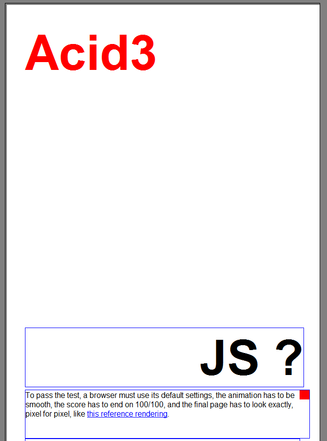
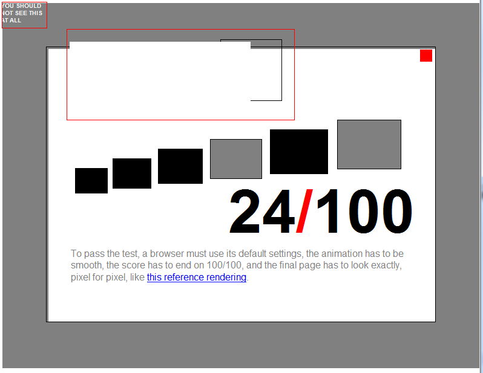
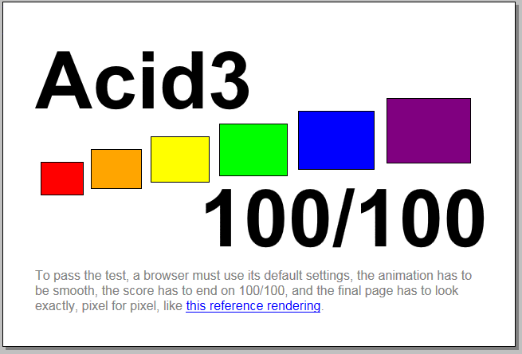
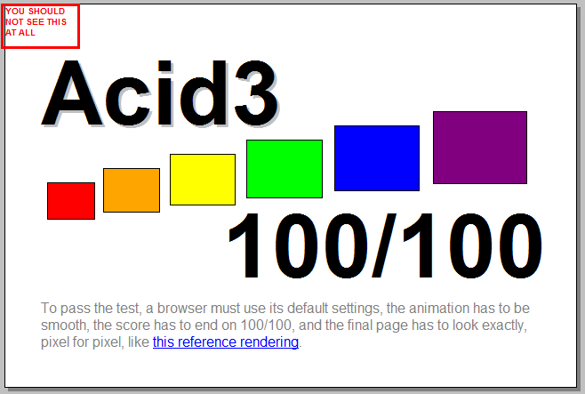

Acid3测试是检测浏览器与Web标准兼容性的主要方法，也是目前行业中最权威的测试。相比Acid2，新的网络规范测试标准Acid3在测试标准上更严格更全面，它能测试一个浏览器的DOMScript能力及CSS渲染、SVG等。
IE67，直接运行不了这个测试，得分按0计算。
IE8 得分24，页面有少许错位，出现了部分不该出现的元素
IE9 和chrome18 得分和流畅度都很完整。
Q+ webkit内核运行结果虽然也是100分，但是在左上角出现了不该出现了元素。
| 平台(系统装IE9) | IE7 | IE8 | IE9 | Q+(IE) | Q+(webkit) | chrome |
|---|---|---|---|---|---|---|
| Acid3测试得分 | 0 | 24 | 100 | 0 | 100（有瑕疵） | 100 |